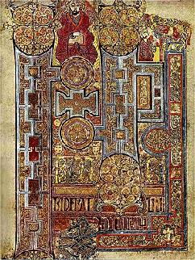
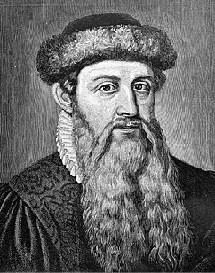
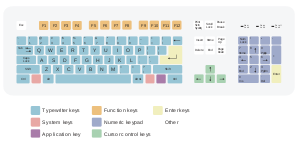
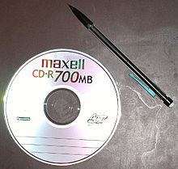
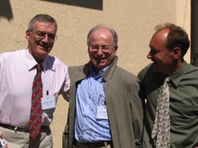
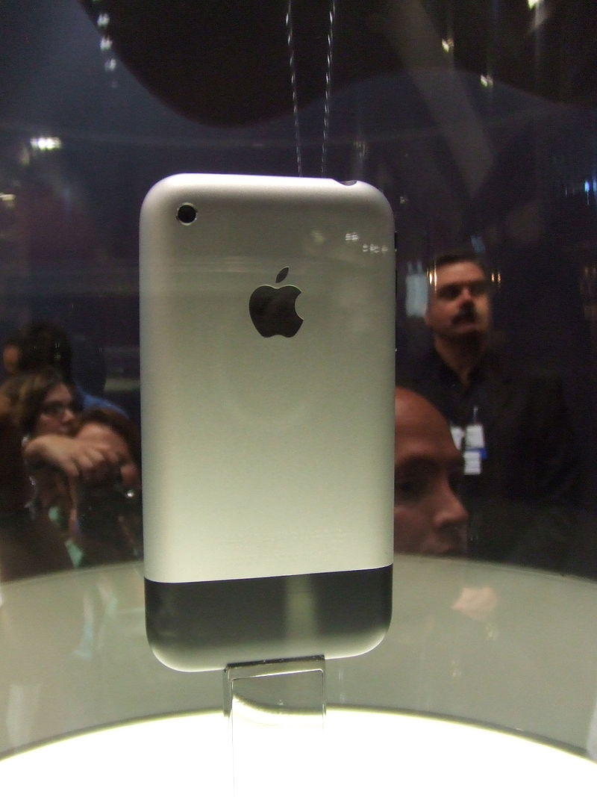

DE EERSTE TIJDSMETING
3.500 v.Cr
De eerste vorm van tijdsmeting werd gedaan door Egyptische en Babylonische astronomen vanaf het jaar 3.500 v.Cr. Dit werd gedaan d.m.v. zonnewijzers, maar dit werkte echter niet wanneer er bewolking was. Hierdoor werd de waterklok uitgevonden, maar ook deze bevatte nadelen, dit werkte niet op zee. in 1386 werd de eerste mechanische klok uitgevonden in Engeland en is nog steeds te vinden in het Salisbury Kathedraal.

THE BOOK OF KELLS
Unknown monks - 300
The book of Kells is geschreven door 4 ierse monniken in het jaar 400. Hierin werd het nieuwe testament beschreven in de vorm ‘ Iona’ en naar Kells zijn gebracht. Dit boek wordt gezien als een meestwerwerk en tevens het begin van de westerse kalligrafie die al eeuwen wordt gebruikt. Het boek wordt getoond in de Universiteit van Dublin.
GUTENBERG-BIJBEL
Johannes Gutenberg - 1445
Uitvinder van de broekdrukkunst die geschiedenis zou schrijven. In 1455 voltooide hij de Gutenbergbijbel die compleet gedrukt was in de deze vorm, die bestond uit los gegoten letters. Hierdoor hoefde men niet een nieuw blok uit te snijden wanneer er een fout in de tekst stond. Het kosste Gutenberg 3 jaar om de bijbel te drukken. Wereldwijd zijn er nog 49 exemplaren te vinden.
QWERTY TOETSENBORD
Christofer sholes - 1873
Christopher Sholes is de uitvinder van de eerste schrijfmachine in 1873. Deze machinne bevatte eerst een alfabetisch toetsenbord, maar dit leverde problemen op. Hierna is hij overgestapt op de voorloper van het QWERTY-toetsenbord die nu nog steeds wereldwijd wordt gebruikt. De naam slaat op de eerste 5 letters linksboven het toetsenbord. Andere toetsenborden zijn: AZERTY, QWERTZ, DVORAK en Colemak.
COMPACT DISC
David Paul Gregg - 1968
Na de uitvinding van de laser in 1958 werd David Paul Gregg geïnspireerd en diende een octrooi in voor een op optisch leesbare videoplaat. Hij zag hiermee de mogelijkheid om niet alleen muziek uit te brengen maar ook om goedkoop films te produceren en schreef hiermee geschiedenis.
WORLD WIDE WEB
Tim Berners Lee - 1989
Het concept van het www is ontwikkeld vanaf 1989 door Tim Berners-Lee, een softwareontwikkelaar van de gebruikersondersteuningsafdeling van CERN, het Europese instituut voor kernfysica in Genève, en diens projectmanager Robert Cailliau. Doel van het www was om de informatie-uitwisseling te vergemakkelijken tussen de wetenschappers die samenwerken in de veelal internationale projecten van CERN.
CREATING KILLER WEBSITES
David Siegel
David Siegel was in eerste instantie een kalligrafie-expert die graag veel bezig was met het internet. Rond 1995 werd hij een van de belangrijkste web-designers uit die periode, web-design was namelijk nog niet een veel voorkomend beroep. Hij schreef hiervoor het boek "creating killer websites" in 1996 en werd hiermee wereld beroemd en tevens koploper in CSS en HTML. Hij werd gezien als de vader van het coderen. Hierna schreef hij een tweede bestseller "Futurize your enterprize" in 1999.

IPHONE
Steve Jobs - 2007
Op 29 juni 2007 kwam de eerste iPhone uit, de iPhone 2G. Er waren twee modellen beschikbaar, met 4GB en 8GB. Dit model wordt ook wel een model uit de eerste generatie genoemd. Dit was vrijwel de eerste telefoon waar (normaal) internet op kon worden gebruikt. ook werd de telefoon geleverd met een YouTube-app. Tegenwoordig zijn er al 10 modellen en zijn iPhones niet meer weg te denken uit het dagelijkse leven. De uitvinder is uiteraard Steve Jobs.
